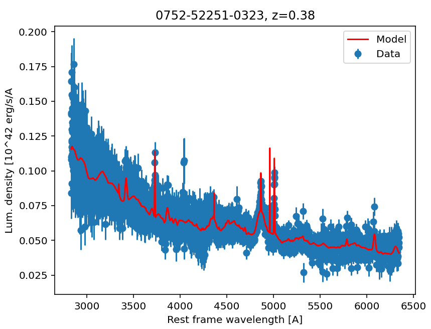

Use with Python
QSFit can also be invoked from Python using JuliaCall as a bridge between the two languages. The procedure is as follows:
- Install Julia as usual;
- Install QSFit;
- Install the JuliaCall Python package with:
pip install juliacall; - Start Python specifying the path to the Julia installation
bindirectory, e.g.python -X juliacall-home=/usr/local/julia-1.12.4/bin.
The simple example presented here can then be executed from Python as follows:
from juliacall import Main as jl
import numpy as np
import matplotlib.pyplot as plt
jl.seval('using QSFit, QSFit.QSORecipes, TypedJSON, GModelFit, GModelFitViewer')
filename = str(jl.seval('download("http://dr10.sdss3.org/sas/dr10/sdss/spectro/redux/26/spectra/0752/spec-0752-52251-0323.fits")'))
jl.seval('spec = Spectrum(Val(:SDSS_DR10), "{}", label="0752-52251-0323, z=0.38")'.format(filename))
jl.seval('recipe = CRecipe{Type1}(redshift=0.3806, Av=0.21)')
jl.seval('res = analyze(recipe, spec)')
jl.seval('TypedJSON.serialize("{}.json", res)'.format(filename))
jl.seval('viewer(res)')
print('Fit statistic: ', float(jl.seval('res.fsumm.fitstat')))
print('Hb integrated luminosity: ', float(jl.seval('res.bestfit[:Hb_br].norm.val')), ' +/- ', float(jl.seval('res.bestfit[:Hb_br].norm.unc')), ' 10^42 erg s^-1')
print('Hb full width at half maximum: ', float(jl.seval('res.bestfit[:Hb_br].fwhm.val')), ' +/- ', float(jl.seval('res.bestfit[:Hb_br].fwhm.unc')), ' km/s')
print('Host galaxy lum. density at 5500A: ', float(jl.seval('res.bestfit[:Galaxy].norm.val')), ' +/- ', float(jl.seval('res.bestfit[:Galaxy].norm.unc')), ' 10^42 erg s^-1 A^-1')
# Plot using matplotlib
x = np.asarray(jl.seval('coords(domain(res.data))'))
y = np.asarray(jl.seval('values(res.data)'))
e = np.asarray(jl.seval('uncerts(res.data)'))
xm = np.asarray(jl.seval('coords(domain(res.bestfit))'))
ym = np.asarray(jl.seval('res.bestfit()'))
plt.title(str(jl.seval('res.spec[:label]')))
plt.xlabel('Rest frame wavelength [A]')
plt.ylabel('Lum. density [10^42 erg/s/A')
plt.errorbar(x, y, yerr=e, fmt='o', label='Data')
plt.plot(xm, ym, 'r', label='Model', zorder=10)
plt.legend(loc='upper right')
plt.show()The following plot will appear on the screen: 